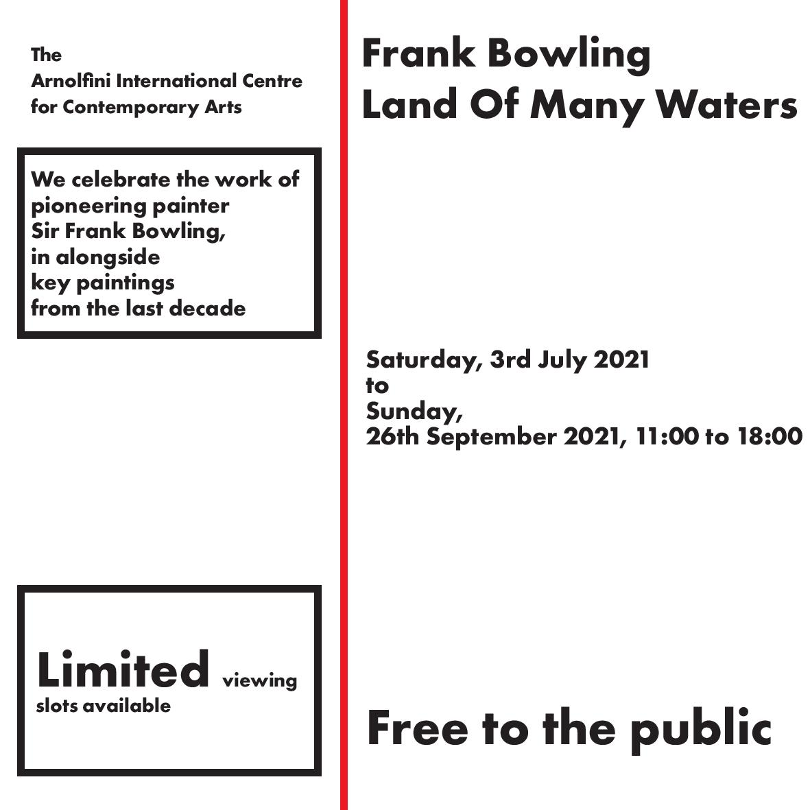
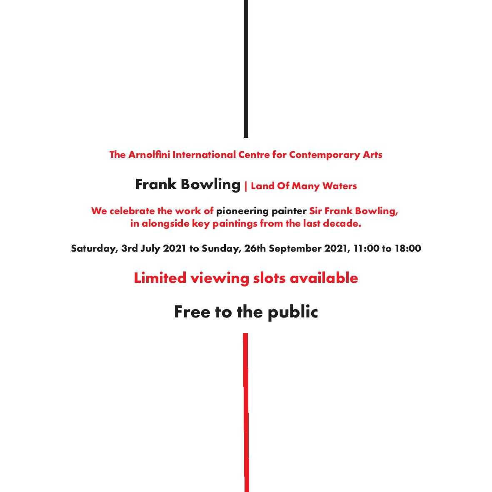
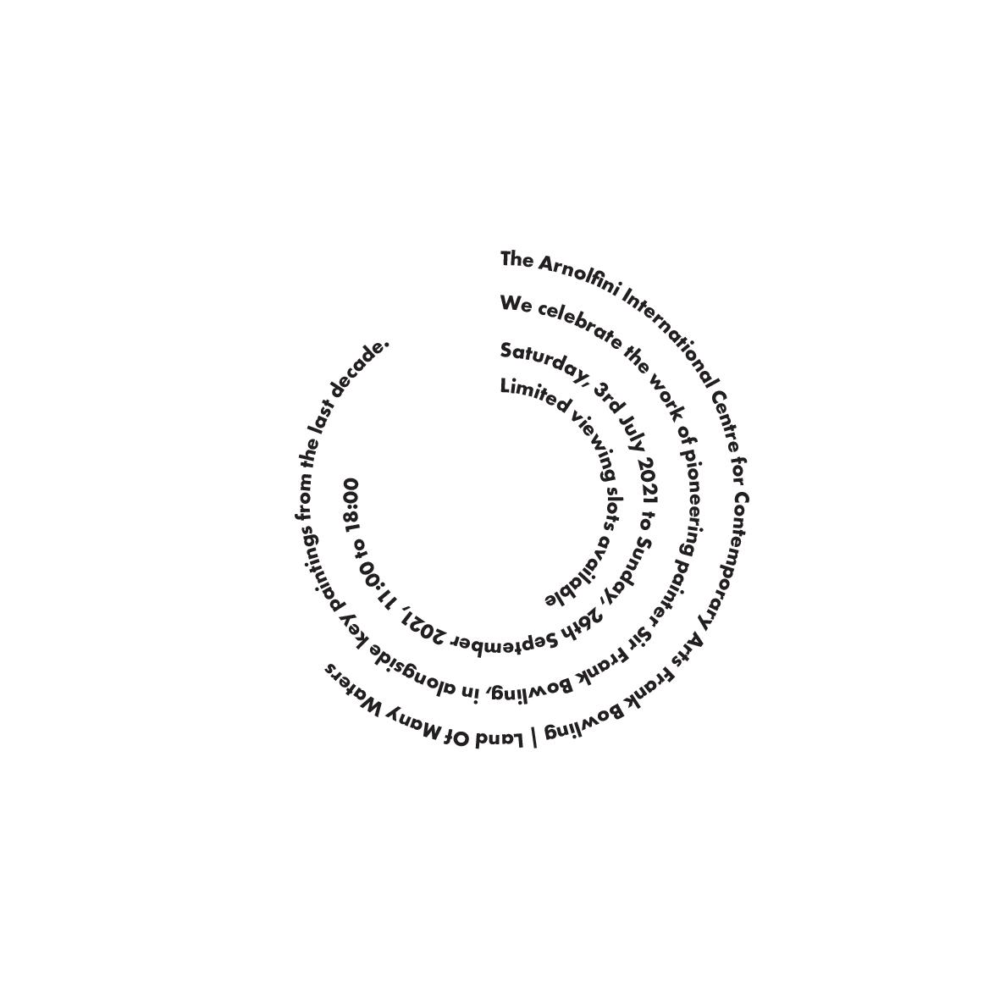
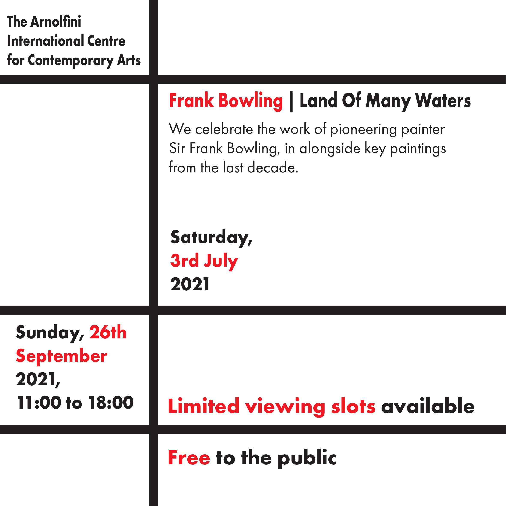
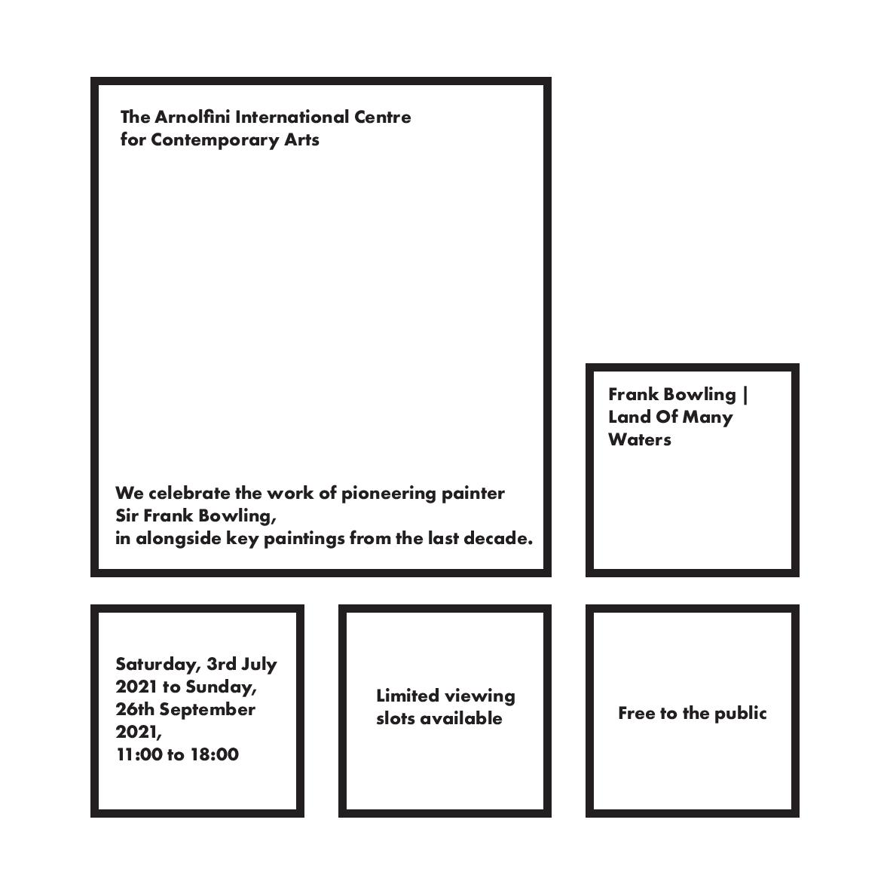
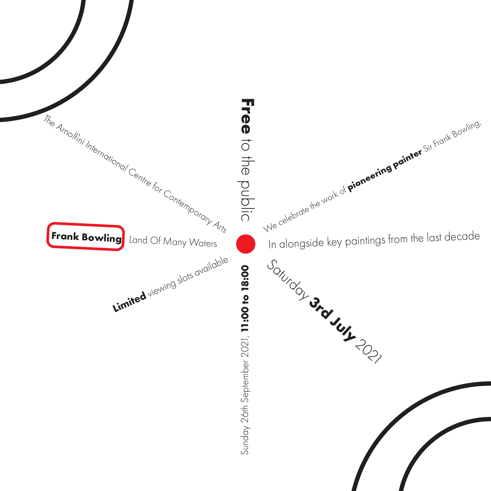
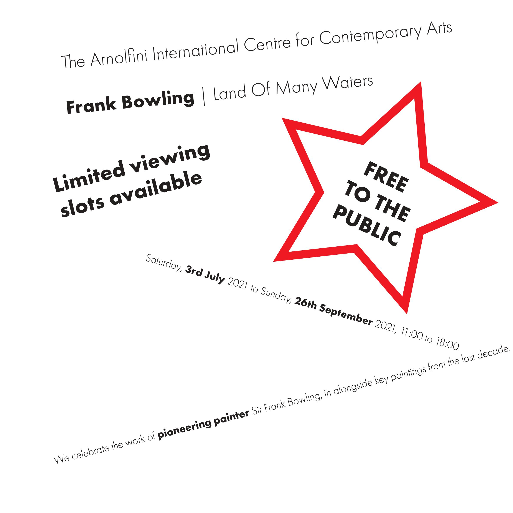
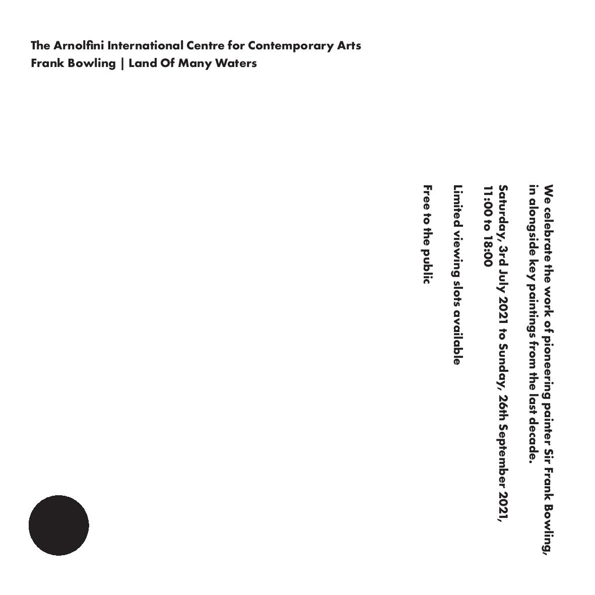

Axial - All elements are organised to the left or right of a single axis

Bilateral - All text is arranged symmetrically on a single axis

Dilatational - All elements expand from a central point in a circular fashion

Grid - A system of vertical and horizontal divisions

Modular - A series of non-objective elements that are constructed as standardised units

Radial - All elements extend from a point of focus

Random - All elements appear to have no specific relationship

Transitional - An informal system of layered banding